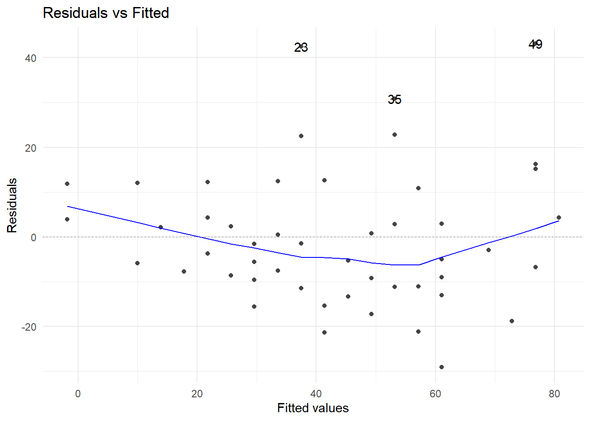
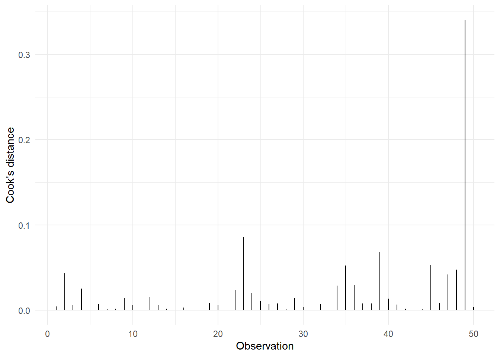
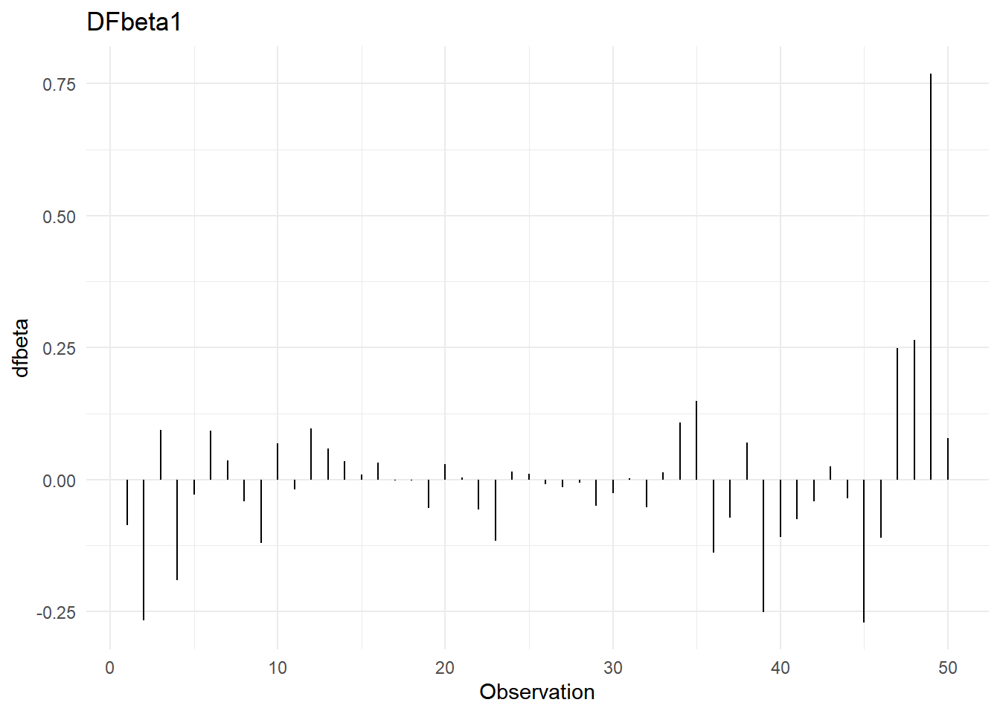

Capítulo 4 Regresión Lineal
4.1 Un poco de história
Los primeros problemas prácticos tipo regresión iniciaron en el siglo XVIII, relacionados con la navegación basada en la Astronomía. Legendre desarrolló el método de mínimo cuadrados en 1805. Gauss afirma que él desarrolló este método algunos años antes y demuestra, en 1809, que mínimos cuadrados proporciona una solución óptima cuando los errores se distribuyen normal. Francis Galton acuña el término regresión al utilizar el modelo para explicar el fenómeno de que los hijos de padres altos, tienden a ser altos en su generación, pero no tan altos como lo fueron sus padres en la propia, por lo que hay un efecto de regresión.
El modelo de regresión lineal es, probablemente, el modelo de su tipo más conocido en estadística.
El modelo de regresión se usa para explicar o modelar la relación entre una sola variable, \(y\), llamada dependiente o respuesta, y una o más variables predictoras, independientes, covariables, o explicativas, \(x_1, x_2, ..., x_p\). Si \(p = 1\), se trata de un modelo de regresión simple y si \(p > 1\), de un modelo de regresión múltiple. En este modelo se asume que la variable de respuesta, \(y\), es aleatoria y las variables explicativas son fijas, es decir, no aleatorias.
La variable de respuesta debe ser continua, pero los regresores pueden tener cualquier escala de medición.
4.2 Objetivos del análisis de regresión
Existen varios objetivos dentro del análisis de regresión, entre otros:
- Determinar el efecto, o relación, entre las variables explicativas y la respuesta.
- Predicción de una observación futura.
- Describir de manera general la estructura de los datos.
4.3 El algorítmo de regresión lineal
Sea \(\Phi: \mathcal{X} \rightarrow \mathbb{R}^N\) y consideremos la familia de hipótesis lineales \[H=\{x\mapsto w \cdot \Phi(x)+b | w\in\mathbb{R}^N, b\in\mathbb{R}\}\]
La regresión lineal consiste en buscar la hipótesis \(h\in H\) con el menor error cuadrático medio, es decir, se debe resolver el problema de optimización: \[\min \frac{1}{m}\sum_{i=1}^{m}(h(x_i)-y_i)^2\]
4.4 Regresión lineal simple
Para este modelo supondremos que nuestra respuesta, \(y\), es explicada únicamente por una covariable, \(x\).
Entonces, escribimos nuestro modelo como:
\[y^{(i)}=\beta_0+\beta_1x^{(i)}+\epsilon^{(i)},\ \ i=1,2,\dots,n\] Como podemos observar, se ha propuesto una relación lineal entre la variable \(y\) y la variable explicativa \(x\), que es nuestro primer supuesto sobre el modelo: La relación funcional entre \(x\) y \(y\) es una línea recta.
Observamos que la relación no es perfecta, ya que se agrega el término de error, \(\epsilon\). Dado que la parte aleatoria del modelo es la variable \(y\), asumimos que al error se le “cargan” los errores de medición de \(y\), así como las perturbaciones que le pudieran ocasionar los términos omitidos en el modelo. Gauss desarrolló este modelo a partir de la teoría de errores de medición, que es de donde se desprenden los supuestos sobre este término:
- \(\mathbb{E}(\epsilon^{(i)})=0\)
- \(\mathbb{V}ar(\epsilon^{(i)})=\sigma^2\)
- \(\mathbb{C}ov(\epsilon^{(i)},\epsilon^{(j)})=0, \ \forall i\neq j\)
N.B. Los errores \(\epsilon^{(i)}\) son variables aleatorias no observables.
4.5 Solución al problema de regresión lineal simple
4.5.1 Mínimos cuadrados ordinarios
En una situación real, tenemos \(n\) observaciones de la variable de respuesta así como de la variable explicativa, que conforman las parejas de entrenamiento \((x_i, y_i), \ i = 1, 2, ..., n\).
Entonces, nuestro objetivo será encontrar la recta que mejor ajuste a los datos observados.
Utilizaremos el método de mínimos cuadrados para estimar los parámetros del modelo, que consiste en minimizar la suma de los errores al cuadrado, esto es:
\[\sum_{i=1}^n \epsilon_i^2 = \sum_{i=1}^n(y_i-(\beta_0+\beta_1x^{(i)}))^2\] Al minimizar la expresión anteriore obtenemos las siguientes expresiones para los estimadores:
\[\hat{\beta_1}=\frac{\sum_{i=1}^ny_i(x_i-\bar{x})}{\sum_{i=1}^n(x_i-\bar{x})^2}\] \[\hat{\beta_0}=\bar{y}-\hat{\beta_1}\bar{x}\] Una desventaja del método de mínimos cuadrados, es que no se pueden hacer procesos de inferencia sobre los parámetros de interés \(\beta_0\) y \(\beta_1\); procesos como intervalos de confianza o pruebas de hipótesis.
Para subsanar esta deficiencia, es necesario asumir una distribución para el error, \(\epsilon_i\), que, siguiendo la teoría general de errores, se asume que tiene distribución normal, con media cero y varianza \(\sigma^2\).
Este supuesto garantiza que las distribuciones de \(y_i,\ \hat{\beta_0},\ \hat{\beta_1}\) sean normales, lo que permite tanto la construcción de intervalos de confianza como de pruebas de hipótesis.
N.B El estimador de \(\sigma^2\) está dado por \(\hat{\sigma^2}=\frac{\sum_{i=1}^n(y_i-\hat{y_i})^2}{n-2}\)
4.5.1.1 Pruebas de hipótesis
En el modelo de regresión lineal simple, la prueba de hipótesis más importante es determinar si estadísticamente existe la dependencia líneal entre \(x\) y \(y\), y que no sea producto del muestreo (debido al azar). Es decir, realizar la prueba de hipótesis:
\[H_0:\beta_1=0 \ vs.\ H_a:\beta_1\neq 0\] No rechazar la hipótesis nula, implicaría que la variable \(x\) no ayuda a explicar a \(y\) o bien que, tal vez, la relación entre estas variables no es lineal.
En este modelo, esta última explicación es un poco cuestionable, ya que se parte, de inicio, del diagrama de dispersión de los datos.
Si rechazamos la hipótesis nula, implicará que \(x\) es importante para explicar la respuesta \(y\) y que la relación lineal entre ellas puede ser adecuada.
Rechazar esta hipótesis nula, también podría implicar que existe una relación lineal entre las variables pero, tal vez, se pueda mejorar el ajuste con algún otro término no lineal.
4.5.1.2 Interpretación de los parámetros
Cuando se tiene una recta en el sentido determinista, los parámetros \(\beta_0\) y \(\beta_1\) tienen una interpretación muy clara; \(\beta_0\) se interpreta como el valor de \(y\) cuando \(x\) es igual a cero y \(\beta_1\) como el cambio que experimenta la variable de respuesta \(y\) por unidad de cambio en \(x\).
La interpretación, desde el punto de vista estadístico, de los parámetros estimados en el modelo de regresión es muy similar:
\(\hat{\beta_0}\) es el promedio esperado de la respuesta \(y\) cuando \(x = 0\) (este parámetro tendrá una interpretación dentro del modelo, si tiene sentido que \(x\) tome el valor cero, de lo contrario, no tiene una interpretación razonable) y
\(\hat{\beta_1}\) es el cambio promedio o cambio esperado en \(y\) por unidad de cambio en \(x\).
4.6 Regresión lineal múltiple
La mayoría de los fenómenos reales son multicausales, por esta razón, un modelo de regresión más acorde a estudios reales es el modelo de regresión lineal múltiple, que es la generalización del modelo simple.
En este modelo supondremos que la variable de respuesta, \(y\), puede explicarse a través de una colección de \(k\) covariables \(x_1,\dots,x_k\).
El modelo se escribe de la siguiente manera:
\[y_i = \beta_0+\beta_1 x_1^{(i)}+\beta_2 x_2^{(i)}+\dots++\beta_k x_k^{(i)}+\epsilon_i\] Al igual que en el caso simple, los parámetros del modelo se pueden estimar por mínimos cuadrados, con el inconveniente de que no se pueden realizar inferencias sobre ellos. Nuevamente, para poder hacer intervalos de confianza y pruebas de hipótesis sobre los verdaderos parámetros hay que suponer que el vector de errores se distribuye normal, en este caso multivariada, es decir:
\[\epsilon\sim N_n(0,\sigma^2\mathbb{I})\]
Esta estructura del error permite tener las mismas propiedades distribucionales que en regresión simple, es decir, \(y_i\) se distribuye normal y \(\beta_i\) tiene distribución normal, facilitando las inferencias sobre cada parámetro y la construcción de intervalos de predicción para las \(y\)’s.
4.7 Solución al problema de regresión lineal múltiple.
4.7.1 Ecuaciones normales
Las expresiones para estimar los parámetros involucrados en el modelo son:
\[\hat{\beta}=(X^TX)^{-1}X^Ty\] \[\hat{\sigma}^2=\frac{\sum_{i=1}^n(y_i-\hat{y_i})^2}{n-p}\]
donde \(p=k+1\) es el número total de parámetros en el modelo.
Tanto en el modelo simple como en el múltiple, la variación total de las \(y\)’s se puede descomponer en una parte que explica el modelo, i.e., los \(k\) regresores o variables explicativas y otra no explicada por estas variables, llamada error.
\[\sum_{i=1}^n(y_i-\bar{y})^2=\sum_{i=1}^n(\hat{y_i}-\bar{y})^2+\sum_{i=1}^n(\hat{y_i}-y_i)^2\]
4.7.1.1 Prueba de hipótesis
La descomposición anterior ayuda para realizar la importante prueba de hipótesis:
\[H_0:\beta_1=\beta_2=\dots=\beta_k=0\ vs.\ H_a:\beta_i\neq0 \ p.a. \ i\]
misma que se realiza a través del cociente entre los errores cuadráticos medios:
\[F_0=\frac{SS_R/k}{SS_E/(n-k-1)}=\frac{MS_R}{MS_E}\sim F_{(k,n-k-1)}\] Esta estadística se desprende de la tabla de análisis de varianza, que es muy similar a la tabla ANOVA que se utiliza para hacer pruebas de hipótesis.
En este caso la tabla es:
| Fuente de variación | Grados de libertad | Suma de cuadrados | Cuadrados medios | F |
|---|---|---|---|---|
| Regresión | k | \(SS_R\) | \(MS_R=SS_R/k\) | |
| Error | n-k-1 | \(SS_E\) | \(MS_E=SS_E/(n-k-1)\) | \(F=\frac{MS_R}{MS_E}\) |
| Total | n-1 | \(S_{yy}\) |
Por lo general, esta estadística rechaza la hipótesis nula, ya que de lo contrario, implicaría que ninguna de las variables contribuye a explicar la respuesta, \(y\). Como se puede observar en la hipótesis alternativa, el rechazar \(H_0\) solo implica que al menos uno de los regresores contribuye significativamente a explicar \(y\).
Asimismo, el rechazar \(H_0\) no implica que todos contribuyan ni tampoco dice cuál o cuáles contribuyen, por esta razón, una salida estándar de regresión múltiple tiene pruebas individuales sobre la significancia de cada regresor en el modelo.
El estadístico para hacer tanto los contrastes de hipótesis como los intervalos de confianza individuales, es:
\[t=\frac{\hat{\beta_i}-\beta_0^{(i)}}{\sqrt{\hat{\mathbb{V}ar}(\hat{\beta_i})}}\sim t_{(n-p)}\] Podemos apreciar que los constrastes de hipótesis se pueden hacer contra cualquier valor particular del parámetro \(\beta_0^{(i)}\), en general. No obstante, en las pruebas estándar sobre los parámetros de un modelo, este valor particular es 0, ya que se intenta determinar si la variable asociada al \(i\)-ésimo parámetro es estadísticamente significativa para explicar la respuesta.
Por lo que el estadístico para este caso es:
\[t=\frac{\hat{\beta_i}}{\sqrt{\hat{\mathbb{V}ar}(\hat{\beta_i})}}\sim t_{(n-p)}\]
De este estadístico se desprenden también los intervalos de confianza para cada parámetro:
\[\beta_i\in(\hat{\beta_i}\pm t_{(n-p,1-\alpha/2)} \sqrt{\hat{\mathbb{V}ar} (\hat{\beta_i})})\] #### Interpretación de parámetros
La interpretación de cada parámetro es similar a la del coeficiente de regresión \(\hat{\beta_1}\) en el modelo simple, anexando la frase: “manteniendo constantes el resto de las variables”.
Esto es, \(\hat{\beta_i}\) es el cambio promedio o cambio esperado en \(y\) por unidad de cambio en \(x_i\), sin considerar cambio alguno en ninguna de las otras variables dentro del modelo, es decir, suponiendo que estas otras variables permanecen fijas. Esta interpretación es similar a la que se hace de la derivada parcial en un modelo determinista.
Nuevamente, la interpretación de \(\hat{\beta_0}\) estará sujeta a la posibilidad de que, en este caso, todas las variables puedan tomar el valor cero.
4.7.1.2 Predicción de nuevos valores
Uno de los usos más frecuentes del modelo de regresión es el de predecir un valor de la respuesta para un valor particular de las covariables en el modelo. Si la predicción se realiza para un valor de las covariables dentro del rango de observación de las mismas, se tratará de una interpolación, y si se realiza para un valor fuera de este rango, hablaremos de una extrapolación.
En cualquiera de los dos casos, estaremos interesados en dos tipos de predicciones:
Predicción de la respuesta media: \(y_0=\mathbb{E}(y|X_0)\)
Predicción de una nueva observación: \(y_0\)
En ambos casos, la estimación puntual es la misma: \(\hat{y_0}=X_0^T\hat{\beta}\)
Lo que difiere es el intervalo de predicción.
Para la respuesta media es: \(y_0=(\hat{y_0}\pm t_{(n-p,1-\alpha/2)}\sqrt{\hat{\sigma^2}X_0^T(X^TX)^{-1}X_0})\)
Y para predecir una observación: \(y_0=(\hat{y_0}\pm t_{(n-p,1-\alpha/2)}\sqrt{\hat{\sigma^2}(1+X_0^T(X^TX)^{-1}X_0)})\)
4.7.1.3 Coeficiente de determinación
Un primer elemento de juicio sobre el modelo de regresión lo constituye el coeficiente de determinación \(R^2\), que es la proporción de variabilidad de las \(y\)’s que es explicada por las \(x\)’s y que se escribe como:
\[R^2=\frac{SS_R}{S_{yy}}=1-\frac{SS_E}{S_{yy}}\] Una \(R^2\) cercana a uno implicaría que mucha de la variabilidad de la respuesta es explicada por el conjunto de regresores incluidos en el modelo.
Es deseable tener una \(R^2\) grande en nuestro modelo, pero esto no significa, como mucha gente piensa, que ya el modelo está bien ajustado.
4.7.2 Evaluación de supuestos
Los dos modelos de regresión presentados, el simple y el múltiple, se construyeron sobre los supuestos de:
La relación funcional entre la variable de respuesta \(y\) y cada regresor \(x_i\) es lineal
La esperanza de los errores es cero, \(\mathbb{E}(\epsilon_i=0)\)
La varianza de los errores es constante, \(\mathbb{V}ar(\epsilon_i) = \sigma^2\)
Los errores no están correlacionados, \(\mathbb{C}ov(\epsilon_i, \epsilon_j) = 0;\ i\neq j\)
Los errores tienen distribución normal con media cero y varianza \(\sigma^2\)
Entonces, para garantizar que el modelo es adecuado, es indispensable verificar estos supuestos.
4.7.2.1 Residuos
Los elementos más importantes para verificar estos supuestos son los residuos, definidos como:
\[e_i=y_i-\hat{y}_i\]
Estos residuos representan la discrepancia entre la respuesta predicha por el modelo ajustado, \(\hat{y}_i\) y el correspondiente valor observado, \(y_i\).
En la literatura de regresi ́on lineal existen cuatro tipos de residuos, a saber
Residuo crudo: \(e_i\)
Residuo estandarizado: \(d_i=\frac{e_i}{\sqrt{\hat{\sigma}^2}}\)
Residuo estudentizado interno: \(r_i=\frac{e_i}{\sqrt{\hat{\sigma}^2(1-h_{ii}})}\)
Residuo estudentizado externo: \(t_i=\frac{e_i}{\sqrt{\hat{\sigma_{(-i)}}^2(1-h_{ii})}}\)
Estos residuos se utilizan en los distintos procedimientos para evaluar los supuestos y lo adecuado del ajuste del modelo. La mayoría de las pruebas conocidas para la verificación de los supuestos, son pruebas gráficas.
Indudablemente, la prueba más importante es sobre la normalidad de los errores, ya que sobre este supuesto descansan todas la inferencias de este modelo.
La manera de verificarlo es a través de la gráfica conocida como QQ-plot o QQ-norm, que grafica los cuantiles teóricos de una distribución normal (eje x) vs. los cuantiles asociados a los residuos. Entonces, si los residuos realmente provienen de una normal, la gráfica debe mostrar la función identidad. Fuertes desviaciones de esta línea darían evidencia de que los errores no se distribuyen normal.
4.7.2.2 Linealidad de los predictores
La manera estándar de evaluar la linealidad de las variables explicativas es a través de la gráfica de cada una de ellas contra los residuos. Si la variable en cuestión ingresa al modelo de manera lineal, esta gráfica debe mostrar un patrón totalmente aleatorio entre los puntos dispuestos en ella.
Cuando la variable explicativa es politómica, este tipo de gráficas son poco ilustrativas en este sentido.

4.7.2.3 Supuestos sobre los errores
Si la gráfica entre los valores ajustados y los residuos estandarizados, muestra un patrón aleatorio, es simétrica alrededor del cero y los puntos están comprendidos entre los valores -2 y 2, entonces se tendrá evidencia de que los errores tienen media cero, varianza constante y no están correlacionados.
Los métodos mostrados hasta ahora, permiten evaluar el modelo de manera global y no por cada observación dentro del mismo. Dado que una observación puede resultar determinante sobre alguna(s) característica(s) del modelo, es conveniente verificar el impacto que cada observación pueda tener en los distintos aspectos del modelo. Las estadísticas para evaluar el impacto que tiene una observación sobre todo el vector de parámetros, alguno de los regresores y sobre los valores predichos, se basan en la misma idea, que consiste en cuantificar el cambio en la característica de interés con y sin la observación que se está evaluando.
4.7.2.3.1 Puntos palanca
Antes de presentar las estadísticas que servirán para hacer este diagnóstico, introduciremos un elemento que es común a ellas: la llamada palanca (leverage) de una observación.
Recordemos que el ajuste del modelo se expresaba como:
\[\hat{\beta}=(X^TX)^{-1}X^Ty \Rightarrow \hat{y}=X\hat{\beta}=Hy\]
Con \(H\) conocida como la matriz sombrero.
Un resultado fundamental sobre esta matriz sombrero es:
\[\mathbb{V}ar(e)=(I-H)\sigma^2 \Rightarrow \mathbb{V}ar(e_i)=(1-h_i)\sigma^2\] Con \(h_i\) el i-ésimo elemento de la diagonal de la matriz \(H\).
Observemos que esta palanca sólo depende de \(X\), entonces, una observación con una palanca, \(h_i\), grande, es aquella con valores extremos en alguna(s) de su(s) covariable(s).
Ya que el promedio de las \(h_i's\) es \(p/n\), consideraremos una observación con palanca grande si su palanca es mayor a \(2p/n\). En este sentido, \(h_i\) corresponde a la distancia de Mahalanobis de \(X\) definida como \((X-\bar{X})^T\hat{\Sigma}^{-1}(X-\bar{X})\).
La dependencia de las estadísticas para el diagnóstico de las observaciones, estriba en que sus cálculos dependen de los valores de la palanca de cada individuo. Estas estadísticas son:
- Distancia de Cook
- Dfbetas
- Dffits
Distancia de Cook: Sirve para determinar si una observación es influyente en todo el vector de parámetros. Una observación se considera influyente, si su distancia de Cook sobrepasa el valor uno.

Dfbetas: Sirven para determinar si una observación es influyente en alguno de los coeficientes de regresión. Hay un dfbeta por cada parámetro dentro del modelo, incluido, por supuesto, el de la ordenada al origen. La regla de dedo es que la observación \(i\) es influyente en el j-ésimo coeficiente de regresión si:
\[|Dfbetas_{j,i}|>\frac{2}{\sqrt{n}}\] 
Dffits: Se utilizan para determinar si una observación es influyente en la predicción de \(y\). Se dice que la i-ésima observación es influyente para predecir \(y\), si:
\[|Dffits_i|>2\sqrt{\frac{p}{n}}\]

4.7.2.4 Multicolinealidad
El modelo de regresión lineal múltiple, se construye bajo el supuesto de que los regresores son ortogonales, i.e., son independientes.
Desafortunadamente, en la mayoría de las aplicaciones el conjunto de regresores no es ortogonal. Algunas veces, esta falta de ortogonalidad no es seria; sin embargo, en algunas otras los regresores están muy cerca de una perfecta relación lineal, en tales casos las inferencias realizadas a través del modelo de regresión lineal pueden ser erróneas. Cuando hay una cercana dependencia lineal entre los regresores, se dice que estamos en presencia de un problema de multicolinealidad.
Efectos de la multicolinealidad:
Varianzas de los coeficientes estimados son muy grandes.
Los estimadores calculados de distintas sub muestras de la misma población, pueden ser muy diferentes.
La significancia de algún regresor se puede ver afectada (volverse no significativo) por que su varianza es más grande de lo que debería ser en realidad o por la correlación de la variable con el resto dentro del modelo.
Es común que algún signo de un parámetro cambie, haciendo ilógica su interpretación dentro del modelo.
4.7.2.4.1 ¿Cómo detectar multicolinealidad?
Matriz de correlación.
Examinar las correlaciones entre pares de variables:
\[r_{ij}\ \ \ i, j = 1, 2, \dots, k\ \ i\neq j\]
Pero, si dos o más regresores están linealmente relacionados, es posible que ninguna de las correlaciones entre cada par de variables, sea grande.
Factor de inflación de la varianza.
\[VIF_j=(1-R_j^2)^{-1}\] Con \(R_j^2\) el coeficiente de determinación del modelo de regresión entre el j-ésimo regresor, \(x_j\) (tomado como variable de respuesta) y el resto de los regresores \(x_i\), \(i\neq j\).
Experiencias prácticas indican que si algunos de los VIF’s excede a 10, su coeficiente asociado es pobremente estimado por el modelo debido a multicolinealidad.
Análisis del eigensistema.
Basado en los eigenvalores de la matriz \(X^TX\).
Número de condición.
\[K=\frac{\lambda_{max}}{\lambda_{min}}\] Si el número de condición es menor que 100, no existen problemas serios de multicolinealidad. Si está entre 100 y 1000 existe de moderada a fuerte multicolinealidad y si excede a 1000, hay severa multicolinealidad.
Índice de condición.
\[k_j=\frac{\lambda_{max}}{\lambda_j}\] Si el índice de condición es menor que 10, no hay ningún problema. Si está entre 10 y 30, hay moderada multicolinealidad, y si es mayor que 30, existe una fuerte colinealidad en la j-ésima variable en el modelo.
N.B. En algunos paquetes estos índices se presentan aplicando la raíz cuadrada a su expresión, entonces hay que extraer raíz a los puntos de corte de los criterios correspondientes.
4.7.2.5 Relación funcional
Un supuesto importante en el modelo de regresión es el que considera que debe existir una relación funcional lineal entre cada regresor y la variable de respuestas. Pero, ¿qué debemos hacer si no se cumple esta relación lineal de la respuesta con alguno(s) de los regresor(es)?
Primero, ya dijimos que este supuesto se evalúa realizando la gráfica de dispersión entre los residuos del modelo y los valores de la variable en cuestión. Cuando no hay una asociación lineal entre la respuesta y la covariable, generalmente este diagrama de dispersión muestra un patrón (tendencia) que sugiere qué tipo de transformación se debería hacer a la covariable para lograr linealidad con la respuesta.
Debe quedar claro que la transformación puede realizarse a la variable explicativa o a la variable de respuesta.
A muchos investigadores no les gusta transformar la respuesta porque argumentan que pierden interpretabilidad del modelo. Aunque esto puede ser cierto, existen transformaciones de la respuesta que pueden regresarse para interpretar el modelo con la respuesta original.
Un problema asociado a esta identificación por parte del usuario, es que debe tener experiencia para asociar estas formas a una función analítica específica; hecho no necesariamente cierto. Por lo tanto, requiere de alguna herramienta técnica que pudiera auxiliarlo en esta labor.
Un buen auxiliar, en el caso de que se crea que es necesario transformar la respuesta, es usar la llamada trasformación Box-Cox.
4.7.2.5.1 Transformación Box-Cox
La transformación Box-Cox de la respuesta, es una función que sirve para normalizar la distribución del error, estabilizar la varianza de este error y mejorar la relación lineal entre \(y\) y las \(X’s\).
Se define como:
\[y_i^{\lambda} = \left\{ \begin{array}{ll} \frac{y_i^{\lambda-1}}{\lambda}, & \lambda \neq 0;\\ ln(y_i), & \lambda=0 .\end{array} \right.\] La siguiente tabla muestra el rango de valores de \(\lambda\) que estarían asociados a una transformación analítica común.
| Rango \(\lambda\) | Transformación Asociada |
|---|---|
| (-2.5, -1.5] | \(\frac{1}{y^2}\) |
| (-1.5, -0.75] | \(\frac{1}{y}\) |
| (-0.75, -0.25] | \(\frac{1}{\sqrt{y}}\) |
| (-0.25, 0.25] | \(ln(y)\) |
| (0.25, 0.75] | \(\sqrt{y}\) |
| (0.75, 1.25] | \(y\) |
| (1.25, 2.5) | \(y^2\) |
4.7.2.5.2 Transformación Box-Tidwell
Box y Tidwell implementan un proceso iterativo para encontrar la mejor transformación de las variables predictoras en el modelo de regresión lineal.
Definiendo como \(X_j^{\gamma_j}\) la correspondiente transformación Box-Tidwell de la variable \(j\).
La tabla anterior para las transfomaciones analíticas de la respuesta, también aplican para estas transformaciones de los predictores.